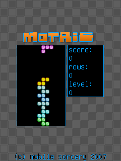

Motris is a variation of the old classic game with a similar name.

This example is included in the MoSync SDK installation in the /examples folder. For information on importing the examples into your workspace, see Importing the Examples.
A classic game. Highest scores are saved on the server, if a network connection is available.
This application requires the device to have a physical keyboard.